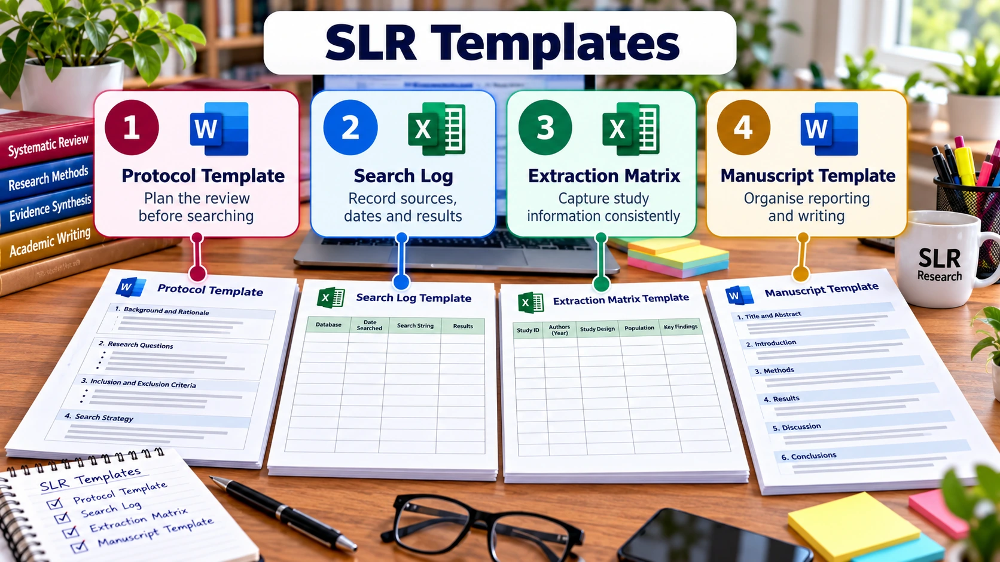

SLR FOUNDATIONS · PRE-HANDS-ON LEARNING
SLR Templates & Planning Tools
Download editable templates and adapt them to your target journal

CORE WORKING FILES · USE THROUGHOUT THE REVIEW
Four templates for the SLR workflow
Use these four files to plan the review, document searches, extract evidence and prepare the manuscript. Keep one version-controlled copy of each working file.
SLR Protocol
Define the review question, rationale, databases, eligibility criteria, screening, appraisal, extraction and synthesis before the main search.
Download protocol template ↓Search Log
Record each database search separately, including date, collection, exact query, filters, counts and export filename.
Download search log ↓Data Extraction Matrix
Capture study characteristics and review-relevant findings consistently, with a page, table or figure locator for traceability.
Download extraction matrix ↓SLR Manuscript
Organise the abstract, introduction, methods, results, discussion, conclusion, references and supplementary materials.
Download manuscript template ↓These are adaptable workshop templates, not journal-endorsed forms. Follow the approved protocol, verify extracted evidence in the source, and check the target journal’s current author instructions.
PRISMA 2020 reporting resources
Use these editable resources to report selection counts and check manuscript coverage. They support transparent reporting; they do not replace a protocol or prescribe one review method.
Editable PRISMA Flow Diagram
Enter verified identification, screening, eligibility and inclusion counts.
Download editable DOCX ↓Editable PRISMA Reporting Checklist
Track the reporting items and manuscript page references.
Download editable DOCX ↓Additional planning worksheets
Use these optional worksheets when the review needs more detailed planning or article-level notes.
SLR Planning Workbook
Plan objectives, questions, keywords, eligibility and extraction fields before working across the core files.
Download planning workbook ↓Research Gap Matrix
Compare prior reviews and studies to document candidate gaps and their evidence base.
Download gap matrix ↓Article Reading Worksheet
Capture structured notes while evaluating a paper; transfer only verified, eligible evidence into the extraction matrix.
Download reading worksheet ↓Search reporting reminders
For every source, retain the exact database-specific query and field codes, search date, limits, result count and original export. Log each source separately, then deduplicate the combined records during Stage 2.